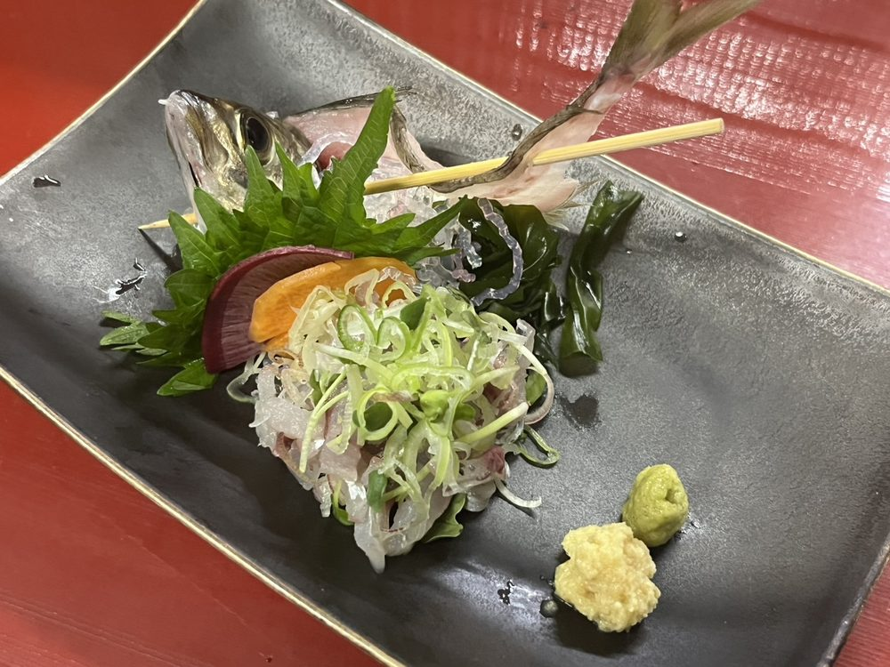
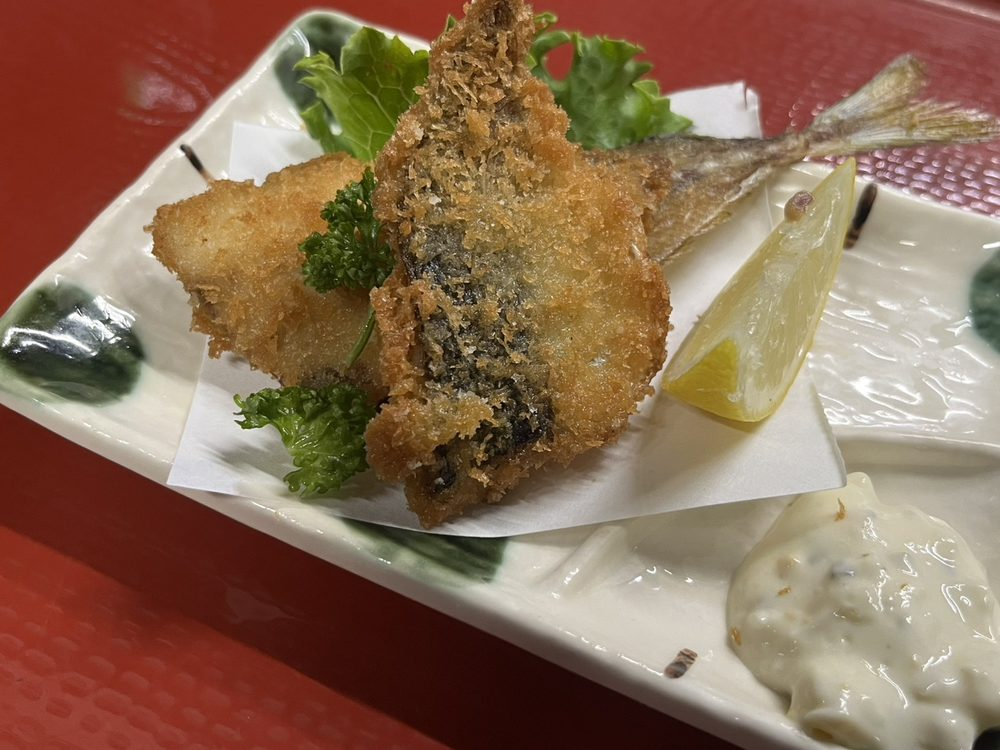

あじ鯵（アジ）
その名の由来は「味が良いから」
おすすめのざうお調理法
アジは刺身も揚げ物もいける万能選手。骨まで美味しくいただけます
タタキ ◎
刺身 〇
塩焼き 〇
唐揚げ 〇
煮付け △
フライ ◎（追加料金あり）
骨を使って（刺身に姿が付いているとき）
骨せんべい ◎
みそ汁 △
生姜と薬味で合わせたタタキがおすすめ！
お子様はフライがおすすめ！
◎＝とてもおすすめ 〇＝おすすめ △＝調理できるがおすすめではない ✕＝提供不可


どんな魚？
鯵（アジ）は青みがかった銀色の体が特徴の、日本の食卓でおなじみの魚。 名前の由来は諸説ありますが、「味が良いから鯵」といわれるほど昔から愛されてきました。
体長 20〜40cm
青魚
ゼイゴが目印
どこにいる？／旬はいつ？
北海道南部から東シナ海まで、日本各地の比較的暖かく浅い海に広く生息。 外洋を群れで回遊するタイプと、湾内や特定の瀬に居つくタイプがいます。 旬は主に初夏から夏（6〜8月頃）で、脂がのって特に美味しくなります。
豆知識
- 体の側面に「トゲトゲの鎧」：
尾から体の中央にかけて「ゼイゴ」と呼ばれる硬いウロコを一列に装備。敵の攻撃や急ブレーキ時に役立つ天然のプロテクターです。 - 武装したのに人間に真っ先にはがされる：
せっかく「ゼイゴ」という甲冑を身に纏ったのに、調理の際は「食感が邪魔」という理由で、包丁で真っ先に削ぎ落とされる不憫な宿命を背負っています。 - インドア派になると高級魚へ化ける：
大海原を旅するノマド（黒アジ）に対し、湾内に居ついて動かないインドア派（黄アジ・ブランドアジ）は脂がノリノリに。引きこもった方が価値が上がる珍しいタイプです。